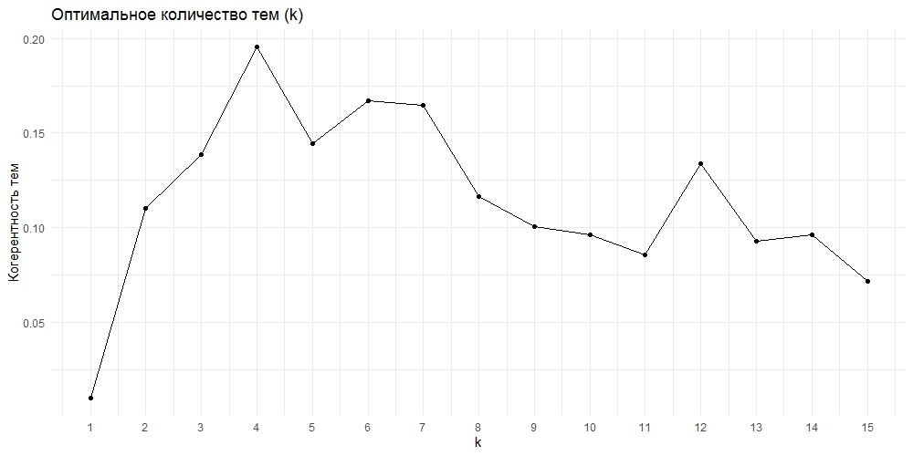
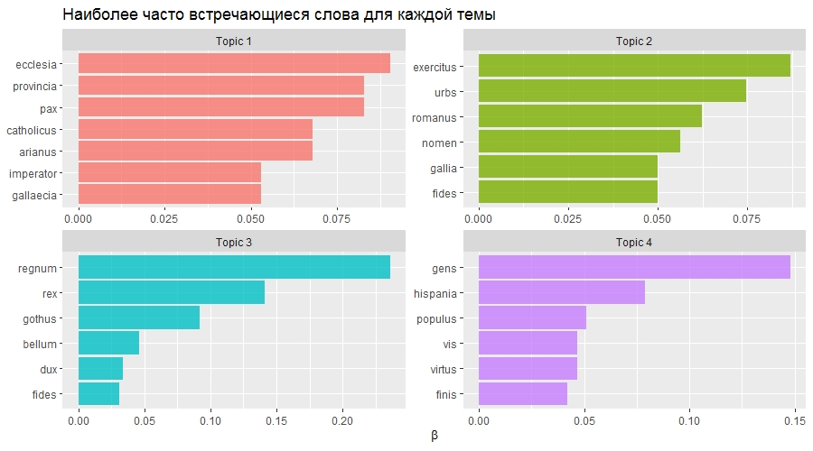
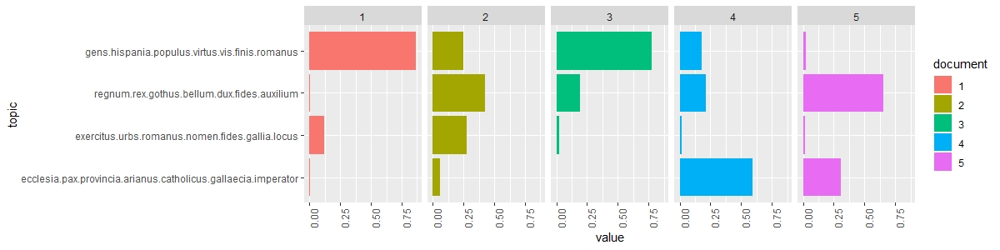

Компьютерный анализ текстов на латинском языке: Тематическое моделирование «Истории готов, вандалов и свевов» Исидора Севильского
А.В.Кузнецов
Рассчет меры когерентности тем.


Распределение тем по всем главам памятника.

Визуализация тем пакетом LDAvis.
LDAvis представляет собой интерактивный графический интерфейс, благодаря которому можно интуитивно видеть взаимосвязь между различными темами, созданными моделью LDA, и распределением слов по темам. В левой части в виде в виде кружков визуализируются темы. Кликнув по теме, можно увидеть в правой части в виде столбчатого графика список 30 значимых для этой темы терминов. Кликнув по термину, можно увидеть его распределение по темам. Размер круга темы отображает важность темы, а расстояние между кружками-темами выражает близость отношений между темами. Для пользователя предусмотрена возможность менять параметр исключительности (λ), ответственный за отображение терминов. Чем ниже значение параметра, тем более редкие и уникальные для данной темы слова будут отображаться в левой части. Если значение увеличить, то будут отображаться более общие и более частотные слова. Красные столбцы показывают, насколько часто слово встречается в выделенной теме, а синие – насколько часто оно встречается во всем корпусе текстов.